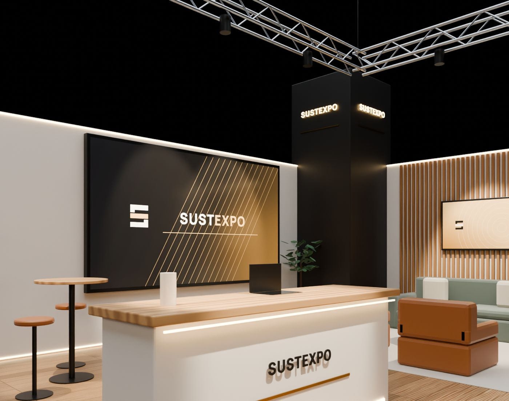
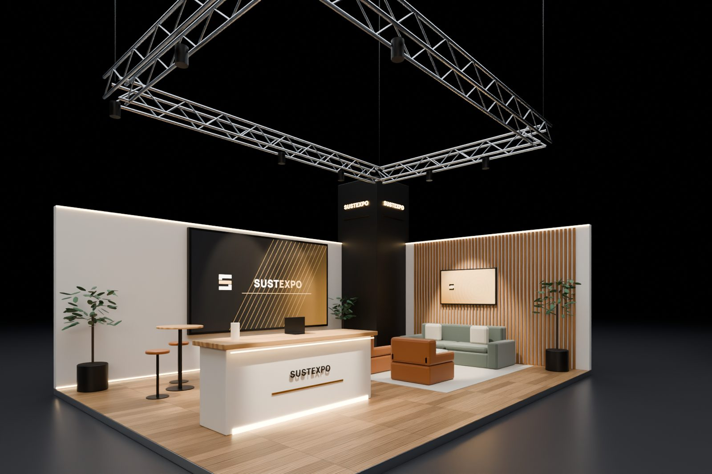
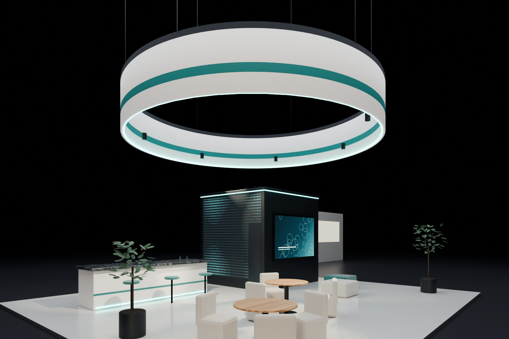
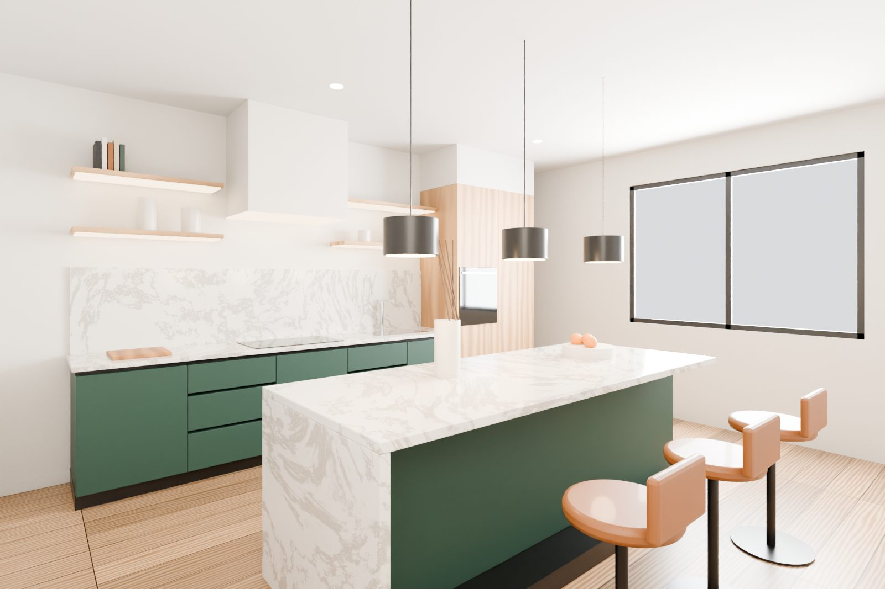
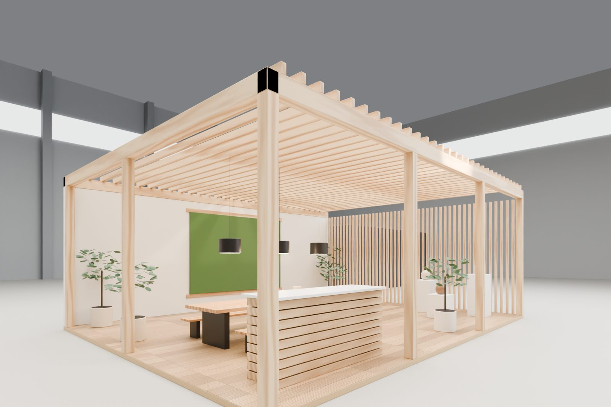
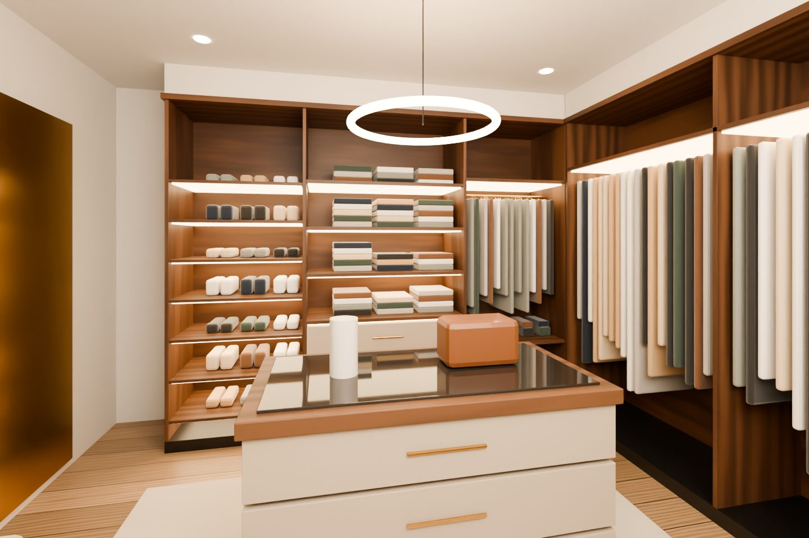
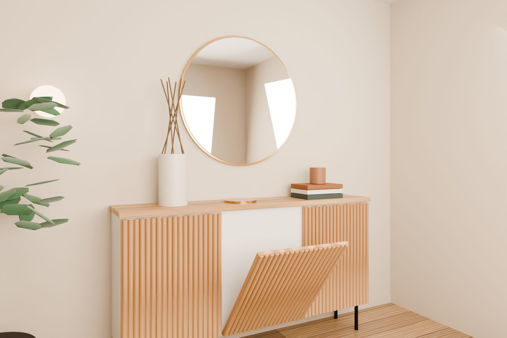
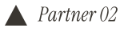
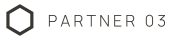
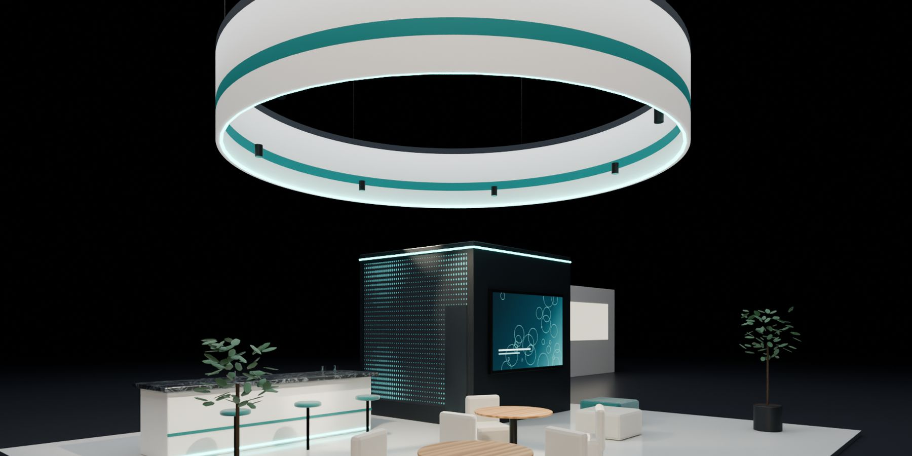

Boş bir alandan göz alıcı bir standa.From an empty plot to a show-stopping stand.Von der leeren Fläche zum Messestand, der begeistert.
SUSTEXPO; fuar alanlarında anahtar teslim stand kurar, evlerde ve ofislerde mobilya montajı yapar. Aşağı kaydırın, standı birlikte kuralım.SUSTEXPO builds turnkey exhibition stands and installs furniture in homes and offices. Scroll down and let's build a stand together.SUSTEXPO baut schlüsselfertige Messestände und montiert Möbel in Wohnungen und Büros. Scrollen Sie – wir bauen gemeinsam einen Stand.
Bir stand nasıl kurulur?How a stand is builtSo entsteht ein Stand01 / 08
01
AlanThe plotDie Fläche
Fuar alanında size ayrılan boş metrekare ölçülür ve işaretlenir.The empty floor space allocated at the fair is measured and marked out.Die zugeteilte Messefläche wird vermessen und markiert.
02
Zemin & parkeFloor & parquetBoden & Parkett
Yükseltilmiş platform kurulur, parkeler tek tek döşenir; kablolar zeminin altına gizlenir.A raised platform goes in and the parquet is laid plank by plank, with cables hidden below.Das Podest wird gebaut und das Parkett Diele für Diele verlegt – Kabel verschwinden darunter.
03
DuvarlarWallsWände
Panel duvarlar, ahşap çıtalar ve logolu marka kulesi yükselir.Panel walls, timber slats and the branded tower go up.Wandpaneele, Holzlamellen und der Markenturm werden aufgestellt.
04
EkranlarScreensBildschirme
LED ekran ve TV'ler monte edilir, kablolaması yapılır ve devreye alınır.The LED wall and TVs are mounted, wired and switched on.LED-Wand und Bildschirme werden montiert, verkabelt und eingeschaltet.
05
Oturma alanıLoungeLounge
Halı, kanepe, berjerler ve sehpayla misafir alanı hazırlanır.Rug, sofa, armchairs and coffee table create the guest area.Teppich, Sofa, Sessel und Couchtisch bilden den Gästebereich.
06
Info deskInfo deskInfotheke
Logolu karşılama bankosu, bar masası ve tabureler yerleşir.The branded reception counter, bar table and stools are placed.Empfangstheke mit Logo, Stehtisch und Hocker werden platziert.
07
AydınlatmaLightingBeleuchtung
Truss sistemi asılır; spotlar ve LED şeritler yanar.The truss is rigged; spotlights and LED strips switch on.Die Traverse wird abgehängt; Spots und LED-Leisten gehen an.
08
TeslimHandoverÜbergabe
Son kontroller yapılır, stand fuar açılışına hazır.Final checks are done — the stand is ready for opening day.Letzte Kontrollen – der Stand ist bereit für die Eröffnung.
Anahtar teslimTurnkeySchlüsselfertig
Stand hazır. Sıra sizin fuarınızda.Stand ready. Your show is next.Stand fertig. Jetzt kommt Ihre Messe.
Çizimden söküme kadar tüm süreci tek ekip olarak yönetiyoruz. Bir sonraki fuarınızın tarihini ve metrekaresini yazın, size dönelim.From drawings to dismantling, one team handles it all. Send us the date and floor space of your next show and we'll get back to you.Von der Zeichnung bis zum Abbau – alles aus einer Hand. Nennen Sie uns Termin und Fläche Ihrer nächsten Messe, wir melden uns.
İki uzmanlık, tek ekip.Two crafts, one team.Zwei Gewerke, ein Team.
Ağırlıklı olarak fuar alanlarında stand kuruyoruz; aynı ustalığı evlerde ve ofislerde mobilya montajına taşıyoruz.Our main focus is building stands at exhibition venues — and we bring the same craftsmanship to furniture installation in homes and offices.Unser Schwerpunkt ist der Standbau auf Messen – dieselbe Handwerkskunst bringen wir in die Möbelmontage für Wohnungen und Büros.

Anahtar teslim standTurnkey standSchlüsselfertiger Stand
01 — Ana uzmanlık01 — Core expertise01 — Kernkompetenz
Fuar Stand KurulumuExhibition StandsMessestandbau
Özel tasarım ahşap standlardan modüler sistemlere kadar, standınızı fuar alanında eksiksiz kurar ve fuar bitiminde güvenle sökeriz. Planlamadan teslime tek muhatap: SUSTEXPO.From custom timber builds to modular systems, we install your stand on site and dismantle it safely after the show. One point of contact from planning to handover.Von individuellen Holzbauten bis zu Systemständen: Wir bauen Ihren Stand vor Ort auf und nach der Messe sicher wieder ab. Ein Ansprechpartner von der Planung bis zur Übergabe.
Stand kurulumu & sökümStand installation & dismantlingStandaufbau & Abbau
Özel tasarım veya modüler standınızı eksiksiz kurar, fuar sonunda güvenle sökeriz.We install your custom or modular stand completely and dismantle it safely afterwards.Wir bauen Ihren individuellen oder modularen Stand komplett auf und danach sicher ab.
Platform, parke & halıPlatforms, parquet & carpetPodest, Parkett & Teppich
Yükseltilmiş platform, parke ve halı kaplama; kablolar zeminin altında gizli kalır.Raised platforms, parquet and carpet — with all cables hidden underneath.Podeste, Parkett und Teppich – alle Kabel verschwinden unsichtbar im Boden.
Ahşap, panel ve ışıklı kumaş duvarlar; logolu kule ve kafa bandı uygulamaları.Timber, panel and backlit fabric walls, brand towers and fascia signage.Holz-, Paneel- und Leuchtstoffwände, Markentürme und Blenden.
Ekran & LED montajıScreen & LED mountingBildschirm- & LED-Montage
LED ekran, TV ve dokunmatik kiosk montajı; düzenli kablo yönetimiyle birlikte.LED walls, TVs and touch kiosks, mounted with tidy cable management.LED-Wände, TVs und Touch-Kioske – inklusive sauberem Kabelmanagement.
Mobilya, info desk & dekorFurniture, info desk & décorMöbel, Infotheke & Deko
Karşılama bankosu, oturma grupları, bar masaları ve bitkilerle stand hayat bulur.Reception desks, lounge seating, bar tables and greenery bring the stand to life.Infotheken, Lounge-Möbel, Stehtische und Pflanzen erwecken den Stand zum Leben.
Truss sistemleri, spot ve LED aydınlatmayla ürünleriniz en iyi ışıkta.Truss rigging, spots and LED lighting put your products in their best light.Traversen, Spots und LED-Licht setzen Ihre Produkte perfekt in Szene.
Mutfak dolabından giyinme odasına, kapıdan ayakkabılığa; her parçayı terazisinde, temiz ve hasarsız monte ediyoruz. İşimiz bitince geriye sadece düzgün çalışan kapaklar kalıyor.From kitchen units to walk-in closets, doors to shoe cabinets — every piece is installed level, clean and damage-free. When we leave, only perfectly aligned doors remain.Von der Küche bis zum Ankleidezimmer, von Türen bis zum Schuhschrank – jedes Teil wird exakt, sauber und schadensfrei montiert. Zurück bleiben nur perfekt ausgerichtete Fronten.
Mutfak montajıKitchen installationKüchenmontage
Alt-üst dolaplar, ada, tezgâh ve ankastre cihaz yerleşimi; terazisinde ve milimetrik.Base and wall units, islands, worktops and built-in appliances — level and precise.Unter- und Oberschränke, Kochinseln, Arbeitsplatten und Einbaugeräte – exakt im Lot.
Giyinme odası sistemleri, sürgülü ve menteşeli gardıroplar, iç düzen aksesuarları.Walk-in closet systems, sliding and hinged wardrobes, interior fittings.Ankleidesysteme, Schiebe- und Drehtürenschränke, Innenausstattung.
Kapı montajıDoor installationTürmontage
İç kapı, sürgülü ve gömme kapı; kasa, pervaz ve kilit ayarıyla birlikte.Interior, sliding and pocket doors — with frames, architraves and locks adjusted.Innen-, Schiebe- und Taschentüren – inklusive Zarge, Blende und Schlossjustierung.
VestiyerHall unitsGarderoben
Antre için askılıklı, oturma banklı ve dolaplı vestiyer çözümleri.Entryway units with coat hooks, benches and storage.Garderoben mit Haken, Sitzbank und Stauraum für den Eingangsbereich.
AyakkabılıkShoe cabinetsSchuhschränke
Duvara asma veya ayaklı, klapalı ve raflı ayakkabılık montajı.Wall-hung or freestanding shoe cabinets with tilt-out doors or shelves.Hängende oder stehende Schuhschränke mit Klappen oder Böden.
Fuar alanı ve şehirVenues and citiesMesseorte und Städte
HakkımızdaAbout usÜber uns
SUSTEXPO; fuar alanlarında stand kuran, evlerde ve ofislerde mobilya montajı yapan bir ekip. İki işin ortak noktası aynı: doğru ölçü, temiz işçilik ve söz verilen günde teslim.SUSTEXPO is a team that builds stands at exhibition venues and installs furniture in homes and offices. Both crafts share the same essentials: accurate measurements, clean work and delivery on the promised day.SUSTEXPO ist ein Team, das Messestände baut und Möbel in Wohnungen und Büros montiert. Beides verbindet dasselbe: genaues Maß, saubere Arbeit und Übergabe am versprochenen Tag.
Fuar organizatörleri, ajanslar ve markalarla çalışıyor; standı teknik çizimden alıp sahada hayata geçiriyoruz. Mobilya tarafında ise mutfaktan giyinme odasına kadar her parçayı, kendi evimize kurar gibi özenle monte ediyoruz.We work with fair organisers, agencies and brands, taking a stand from technical drawing to reality on the show floor. On the furniture side, we install everything from kitchens to walk-in closets with the same care we would give our own home.Wir arbeiten mit Messeveranstaltern, Agenturen und Marken und setzen Stände von der technischen Zeichnung bis zur fertigen Fläche um. Bei Möbeln montieren wir alles – von der Küche bis zum Ankleidezimmer – so sorgfältig, als wäre es unser eigenes Zuhause.
Her işe yerinde keşif ve ölçüyle başlarız; sürprizlere yer bırakmayız.Every job starts with an on-site survey — no surprises later.Jeder Auftrag beginnt mit Aufmaß vor Ort – ohne spätere Überraschungen.
02
Zamanında teslimOn-time deliveryPünktliche Übergabe
Fuar açılışı ertelenmez, biz de ertelemeyiz. Takvime sadık kalırız.Opening day doesn't move, and neither do we. We stick to the schedule.Die Messe wartet nicht – wir auch nicht. Wir halten jeden Termin.
03
Temiz işçilikClean craftsmanshipSaubere Arbeit
Koruyucu örtü, sessiz alet, toplanmış alan. Geldiğimiz gibi bırakırız.Protective covers, quiet tools, a tidy site. We leave it as we found it.Schutzabdeckungen, leise Werkzeuge, aufgeräumte Fläche – wie vorgefunden.
04
Tek muhatapOne point of contactEin Ansprechpartner
Keşiften söküme kadar tek bir proje sorumlusuyla çalışırsınız.From survey to dismantling, you work with a single project lead.Vom Aufmaß bis zum Abbau: ein fester Projektleiter für Sie.
SüreçProcessAblauf
Nasıl çalışıyoruz?How we workSo arbeiten wir
Kaydırmaya devam edin →Keep scrolling →Weiter scrollen →
01
Keşif & ölçüSurvey & measureAufmaß & Beratung
Fuar alanını ya da mekânı yerinde inceler, ölçüleri alır, ihtiyaçlarınızı dinleriz.We inspect the venue or room on site, take measurements and listen to your needs.Wir besichtigen Messefläche oder Raum, nehmen Maß und hören Ihnen zu.
02
PlanlamaPlanningPlanung
Teknik çizim, malzeme listesi ve net bir iş takvimi hazırlarız.We prepare technical drawings, a materials list and a clear schedule.Wir erstellen technische Zeichnungen, Materialliste und einen klaren Zeitplan.
03
Kurulum & montajBuild & installAufbau & Montage
Ekibimiz sahada; hızlı, sessiz ve temiz çalışır.Our crew works on site — fast, quiet and clean.Unser Team arbeitet vor Ort – schnell, leise und sauber.
04
Kontrol & teslimCheck & handoverPrüfung & Übergabe
Her kapak, her bağlantı, her ışık kontrol edilir; sonra anahtar teslim ederiz.Every door, joint and light is checked before we hand over the keys.Jede Front, jede Verbindung, jedes Licht wird geprüft – dann übergeben wir.
05
Söküm & destekDismantling & supportAbbau & Service
Fuar bitince standı sökeriz; montaj sonrası ayar ve destek için bir telefon uzağınızdayız.After the show we dismantle the stand; for after-care adjustments we're one call away.Nach der Messe bauen wir ab; für Nachjustierungen sind wir nur einen Anruf entfernt.
Seçili işlerSelected workAusgewählte Projekte
Kurduğumuz sahneler.Spaces we've built.Räume, die wir gebaut haben.
Fuar standlarından mutfaklara, giyinme odalarından kapılara; işlerimizden bir seçki.From exhibition stands to kitchens, walk-in closets to doors — a selection of our work.Von Messeständen bis Küchen, von Ankleiden bis Türen – eine Auswahl unserer Arbeiten.

Köşe stand — LED ekran, lounge ve info deskCorner stand — LED wall, lounge and info deskEckstand — LED-Wand, Lounge und Infotheke

Ada stand — asma halka bannerIsland stand — suspended ring bannerInselstand — abgehängtes Ringbanner

Yeşil lake ve meşe mutfak, mermer adaGreen lacquer and oak kitchen with marble islandKüche in Grünlack und Eiche mit Marmorinsel

Ahşap pavyon stand — çıtalı tavanTimber pavilion stand — slatted roofHolzpavillon-Stand — Lamellendach

Ceviz giyinme odası, LED raflıWalnut walk-in closet with LED shelvesAnkleidezimmer in Nussbaum mit LED-Böden

Çıtalı kapaklı ayakkabılık ve aynaFluted shoe cabinet with round mirrorSchuhschrank mit Rillenfront und Spiegel
Tüm projeler galeride, kategoriye göre.All projects in the gallery, sorted by category.Alle Projekte in der Galerie, nach Kategorie.
Birlikte büyüdüğümüz markalar.Brands we grow with.Marken, mit denen wir wachsen.
Fuar organizatörleri, tasarım ofisleri, ajanslar ve mobilya üreticileriyle uzun soluklu iş birlikleri yürütüyoruz. Siz de bu listede yer almak ister misiniz?We run long-term collaborations with fair organisers, design studios, agencies and furniture makers. Would you like to join this list?Wir pflegen langjährige Partnerschaften mit Messeveranstaltern, Designbüros, Agenturen und Möbelherstellern. Möchten Sie dazugehören?



Yeni projeNew projectNeues Projekt
Bir sonraki fuarınızı birlikte kuralım.Let's build your next show together.Bauen wir Ihre nächste Messe gemeinsam.
Projenizi konuşalım.Let's talk about your project.Sprechen wir über Ihr Projekt.
Fuar tarihi, stand ölçüsü ya da montaj yapılacak mobilyalar… Ne kadar detay verirseniz o kadar hızlı teklif hazırlarız.Fair dates, stand size or the furniture to be installed — the more detail you share, the faster we can quote.Messetermin, Standgröße oder die zu montierenden Möbel – je mehr Details, desto schneller unser Angebot.
Çalışma saatleriOpening hoursÖffnungszeitenPzt – Cmt · 09:00 – 19:00Mon – Sat · 09:00 – 19:00Mo – Sa · 09:00 – 19:00
Bizi ziyaret edinVisit usBesuchen Sie uns
Konumumuzu görmek için haritayı yükleyin (Google Maps).Load the map to see our location (Google Maps).Laden Sie die Karte, um unseren Standort zu sehen (Google Maps).